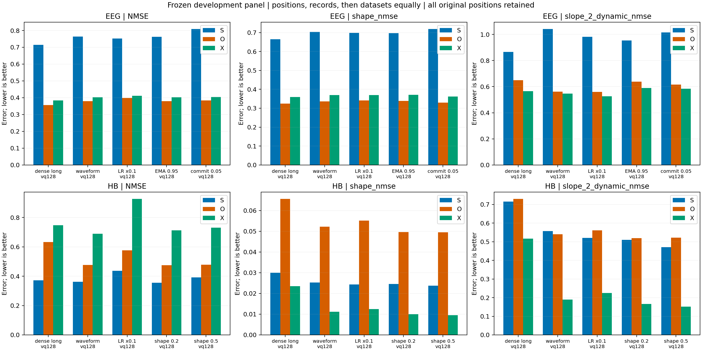

固定四名训练被试、五父窗与原27样例；复用原1000步连续预热，每候选新增3000步硬量化训练。K128保持双支合计7 bit/s。所有候选均完成；按三轮修改上限结束，保留负结果。
Hb继续保留原waveform K128。EEG的原dense_long K128重建较好但健康未通过；R1 slow_encoder解决本面板健康门槛，却未改善重建，仅保留为诊断候选。未启动补种子、额外被试或后续状态解释检查。
完整判断与实验卡 · 全部模型指标CSV · 逐库/色团CSV · 每条健康规则CSV · 独立核验 · 精确执行命令

| 轮次/模型 | S / O / X NMSE | S / O / X D_shape | 完整健康 | 主要指标变化 | 判断 |
|---|---|---|---|---|---|
| baseline eeg waveform | 0.76417 / 0.37980 / 0.40328 | 0.095 / 0.140 / 0.208 | False | 父版本 | 参照 |
| baseline hb waveform | 0.36172 / 0.47721 / 0.68862 | 0.412 / 0.441 / 0.778 | True | 父版本 | 参照 |
| round_1 eeg slow_encoder | 0.75208 / 0.39789 / 0.41205 | 0.102 / 0.160 / 0.226 | True | +1.79% | rejected |
| round_1 hb slow_encoder | 0.43642 / 0.57556 / 0.92647 | 0.455 / 0.412 / 0.741 | True | +4.39% | rejected |
| round_2 eeg fast_ema | 0.76225 / 0.37893 / 0.40307 | 0.093 / 0.133 / 0.215 | False | -0.18% | rejected |
| round_2 hb shape_loss | 0.35529 / 0.47473 / 0.71315 | 0.461 / 0.466 / 0.805 | True | -5.99% | rejected |
| round_3 eeg low_commitment | 0.80889 / 0.38385 / 0.40436 | 0.040 / 0.126 / 0.206 | False | +2.40% | rejected |
| round_3 hb shape_loss_stronger | 0.39161 / 0.47827 / 0.73128 | 0.501 / 0.463 / 0.818 | True | -8.88% | rejected |
NMSE按各分量冻结训练方差归一化，不能相加。先色团/位置，再记录，再数据集等权。主要指标变化：EEG为S/O/X相对NMSE之均值，Hb为相对形态误差之均值，负值表示改善。晋级需改善至少10%，每个分量NMSE恶化不超过5%，完整健康及整数重放同时通过。
真实赋码中同一码的正负斜率混合，使条件均值趋平；原幅度坐标进一步掩盖小动态。最新Hb waveform并非主要靠边界跳变：X的边界差分能量占比约5.25%，目标约4.72%；dense_long K128约65.3%。但量化损失真实存在：waveform连续与K128的X D_shape分别约0.915和0.778。REFED的S/O分量及Visual Probe1:CH23的大幅漂移在连续模型中也恢复不足。
D_shape = 1 − 片段去均值误差能量 / 目标去均值能量。近零阈值为训练目标特征P10，逐库/分量/色团冻结；近零片段仍进入完整NMSE。2秒/6秒OLS斜率使用真实秒数。每个patch的水平/形态能量与闭合核验位于模型目录patch_diagnostics.npz，样本身份见samples.json。
每轮固定图含原幅度S/O/X、独立连续参照、父版本及候选；Hb增加去均值形态和2/6秒斜率页。连续参照保持原objective，Hb形态损失候选并未另训匹配objective的连续模型。训练探针中的continuous bypass只是额外诊断，独立连续参照仍为原单独训练模型。
baseline: 全部pattern/指标 · 固定27样例与动态页 · 实际看图记录
round_1: 全部pattern/指标 · 固定27样例与动态页 · 实际看图记录
round_2: 全部pattern/指标 · 固定27样例与动态页 · 实际看图记录
round_3: 全部pattern/指标 · 固定27样例与动态页 · 实际看图记录
形态损失展示了动态与绝对幅度的权衡；提高权重到0.5后2秒斜率改善约13%，形态改善仍不足10%，S/X原幅度误差超过5%退化线。单纯减慢encoder、加快EMA或降低commitment均未解决EEG重建与健康的联合目标。谱图显示硬量化明显压低振荡成分，不能把良好用码视为波形恢复。
下一步Hb优先独立检验level/slope/residual解码路径，保持原损失、K和宽度；EEG先在已有连续latent上做训练集拟合的低维量化几何诊断，再决定新训练。当前仅有开发面板的描述性level/slope组织，尚未进入跨裁窗、迁移或生理优势验证。
所有初始失败保留。R1的一次GPU冻结复评因竞争显存OOM退出，随后CPU复评完成；训练和checkpoint未变。最终来源为R1 evaluation_v3、R2 evaluation_v2、R3 evaluation；原导出均保留。
冻结EEG频谱诊断：R1 EEG spectrum · R2 EEG spectrum · R3 EEG spectrum；同一评分支持、Hann窗，频带能量除以完整目标频谱能量，逐库分面。